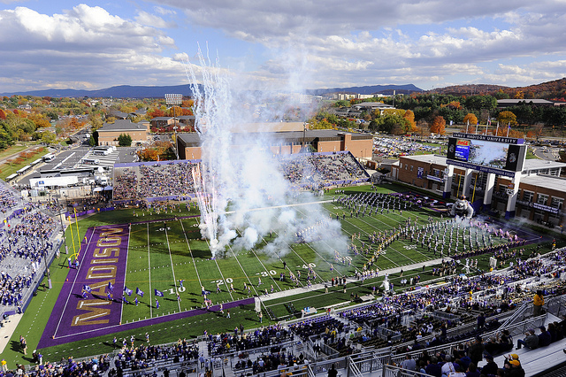

James Madison University, Spring 2018 Semester
Lab23: Greenfoot media computation

Image courtesy of JMU Creative Services
Background
Media Computation is an approach to learning programming that focuses on manipulating digital media like images and sounds. In today's lab, you will use Greenfoot to implement several features of programs like Photoshop.
Objectives
Practice writing nested for loops.
Create and use immutable objects.
Become familiar with a new API.
Part 1: Setting up your project
In the previous Greenfoot lab, we dealt with Actor objects. Today we will focus on the world itself.
-
Run Greenfoot and then select "Scenario > New Java Scenario..." from the menu. Name your scenario
Lab23or whatever you like. Once open, right-click the "MyWorld" rectangle and delete it. We'll create a new World from scratch. -
Right-click the football stadium photo above, and save it to the "images" folder in your Greenfoot project. Then in Greenfoot, right-click the "World" rectangle on the right and select "New subclass..." Name the subclass
Imageand select football.jpg (it should be listed below). -
Open the editor for Image.java (by double clicking on the Image rectangle on the right) and modify the constructor to use the dimensions 640x426 (the actual size of football.jpg). Then press the "Compile" button.
-
Write your name, today's date, and a short description of this lab in the Javadoc comment of the Image class. After you complete the exercises below, you will submit the Image.java file via Canvas.
Part 2: Averaging the colors
Images in Greenfoot are essentially 2D arrays of Color objects. Each object represents the red, green, and blue value of a single pixel.
-
Skim through the GreenfootImage Javadoc to become familiar with that class. In particular, you will need to use the following methods: getWidth, getHeight, getColorAt, and setColorAt.
-
Then skim through the Color Javadoc to become familiar with that class. You will need to use the getBlue, getGreen, and getRed methods.
-
Add the following method stub below your constructor:
/** * Updates all pixels to the closest gray equivalent. */ public void grayScale() { GreenfootImage img = getBackground(); } -
Implement the following algorithm: for each x and y value in the range (0..width, 0..height), get the Color object at that x and y, calculate the average of its red, green, and blue values, and then create a
new Colorobject using the average for all three of its RGB values. Finally, store the new Color at the current x and y. -
To test your method, compile the project and then right-click the world image in the main Greenfoot window. A menu will appear with all the methods that you write today. Press the reset button (on the bottom) before trying other methods.
Part 3: Other transformations
Once you figure out how to do grayScale, you can implement all sorts of other features. All four of today's methods are very similar in structure. Their solutions are simple, but they can be challenging to figure out. If you get stuck, try working through examples on paper.
-
Add the following method stubs to your source file:
/** * Applies a sepia transformation to all pixels. */ public void sepiaTone() { } /** * Replaces the right half of an image with a reflection of its left half. */ public void reflectLeft() { } /** * Replaces the bottom half of an image with a reflection of its top half. */ public void reflectTop() { } -
Here is the formula for sepia transformation, given the original color's red, green, and blue values:
- r2 = 0.393 * R + 0.769 * G + 0.189 * B
- g2 = 0.349 * R + 0.686 * G + 0.168 * B
- b2 = 0.272 * R + 0.534 * G + 0.131 * B
In other words, you need to create a
new Color(r2, g2, b2)for each pixel. If any of those color values is greater than 255, you should replace it with 255. -
The reflect methods are implemented by copying colors from one half of the image to another half. You won't need to change the colors, but you will need to figure out how to go from (x, y) to (x2, y2). Here are some hints:
- In reflectLeft, the x for loop goes from 0 to width / 2.
- In reflectTop, the y for loop goes from 0 to height / 2.
X X X X X X
X X X X X X